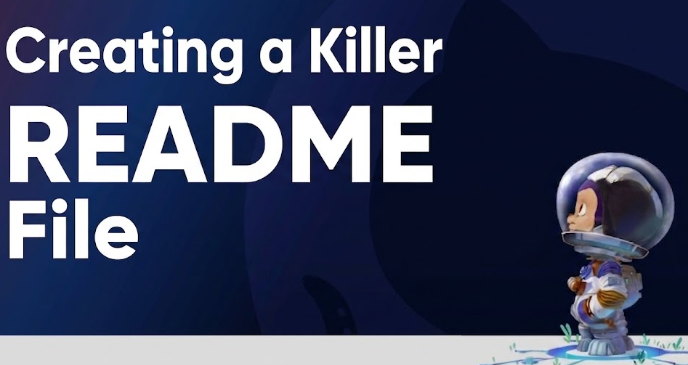
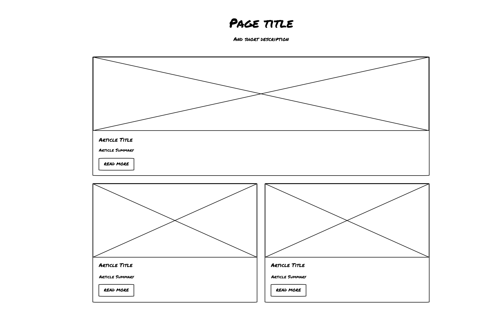
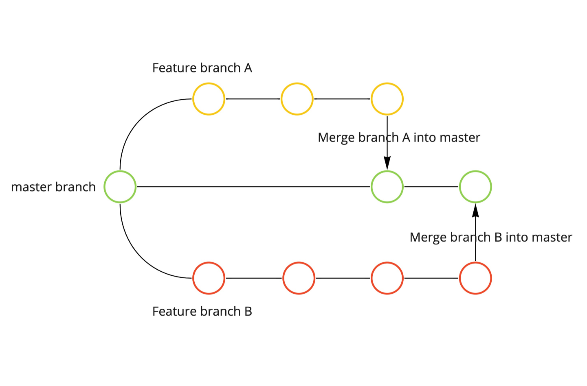

What is a README File?
A README file explains what a project does, how to install it, how to use it, and any important information developers need. It is usually the first file people read when viewing a project.
Read moreLearn about README files, wireframes, and Git branches.

A README file explains what a project does, how to install it, how to use it, and any important information developers need. It is usually the first file people read when viewing a project.
Read more
A wireframe is a digital diagram that shows the skeleton of a website. It strips away visual elements like colors, fonts, and images to focus entirely on where headers and content blocks live.
Read more
A branch in Git is an independent line of development. Branches allow developers to work on new features, updates, or fixes without affecting the main project. This helps keep changes organized and separate until they are ready to be merged.
Read more